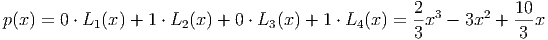
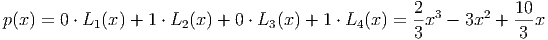
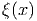

pontos
pontos  , o método das diferenças
divididas de Newton consiste em construir o polinômio interpolador da forma
, o método das diferenças
divididas de Newton consiste em construir o polinômio interpolador da forma
Dado um conjunto com pontos , o método das diferenças
divididas de Newton consiste em construir o polinômio interpolador da forma

 ,
,  , os coeficientes  satisfazem o seguinte
sistema triangular inferior:
, os coeficientes  satisfazem o seguinte
sistema triangular inferior:
|
|
Resolvendo de cima para baixo, obtemos
|
|
Note que os coeficientes são obtidos por diferenças das ordenadas divididas por diferenças das abscissas dos pontos dados. Para vermos isso mais claramente, introduzimos a seguinte notação:
![f[xj] := yj
f[xj+1] −-f[xj]
f[xj,xj+1] := x − x
j+1 j
f[x ,x ,x ] := f[xj+1,xj+2]-−-f[xj,xj+1]
j j+1 j+2 xj+2 − xj
.
..
f[xj+1,xj+2,...,xj+k-] −-f[xj,xj+1,...,xj+k-−1]
f [xj, xj+1,...,xj+k] := x − x
j+k j](main2867x.png)
Uma inspeção cuidadosa dos coeficientes obtidos em (6.2) nos mostra que
|
|
Isto nos permite esquematizar o método conforme apresentado na Tabela 6.1.
Exemplo 6.2.1. Use o método de diferenças divididas para encontrar o polinômio que passe pelos pontos .
Solução. Usando o esquema apresentado na Tabela 6.1, obtemos
![---||---|---------------------------------------------------------
|| |
-j-||xj-|f-[xj]---f[xj−1,xj]---f[xj−2,xj−-1,xj]--f[xj−3,xj−2,xj−-1,xj]-
|| |
1 ||− 1| 333
|| | -1−3--= −−− 222
|| | 0−(−1)
2 ||0 | 1 2−(−2)= 222
|| | 1−(−1)
|| | 31−−10 = 2 3−6−(−21)-= 111
|| | 20− 2
3 ||1 | 3 3−0-= 6
|| | 43−3
|| | 3−1 = 20
4 ||3 | 43
------------------------------------------------------------------](main2874x.png) |
Portanto, o polinômio interpolador do conjunto de pontos dados é
![---|----|-------------------------------------------------------
j |xj |f[xj] f[xj−1,xj] f[xj−2,xj− 1,xj]
---|----|-------------------------------------------------------
1 |x1 fff [x[x[x111 ]]]
| | f[x2]−f[x1]
| | fff[[xx[x111,,,xxx222]]] = x2−x1
| | f[x2,x3]−f[x1,x2]
2 |x2 f [x2 ] fff [x[x[x111,,,xxx222,,,xxx333]]] = x3−x1
| | f [x ,x ] = f[x3]−f[x2]
| | 2 3 x3−x2
3 |x2 f [x2 ]
----------------------------------------------------------------](main2871x.png)